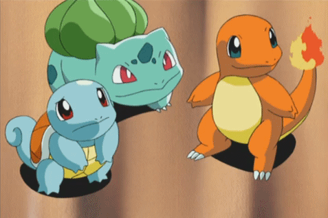
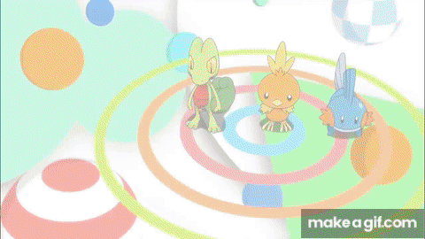
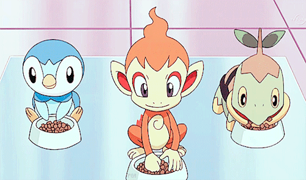
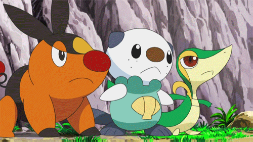
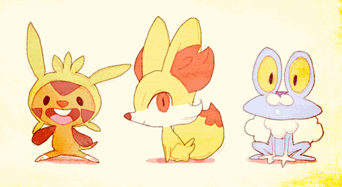
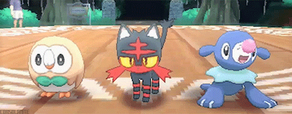
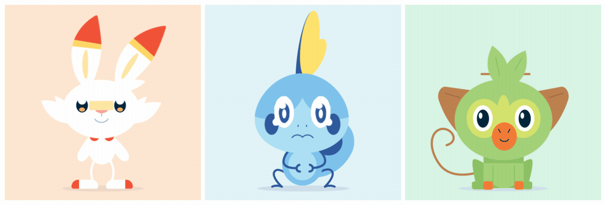
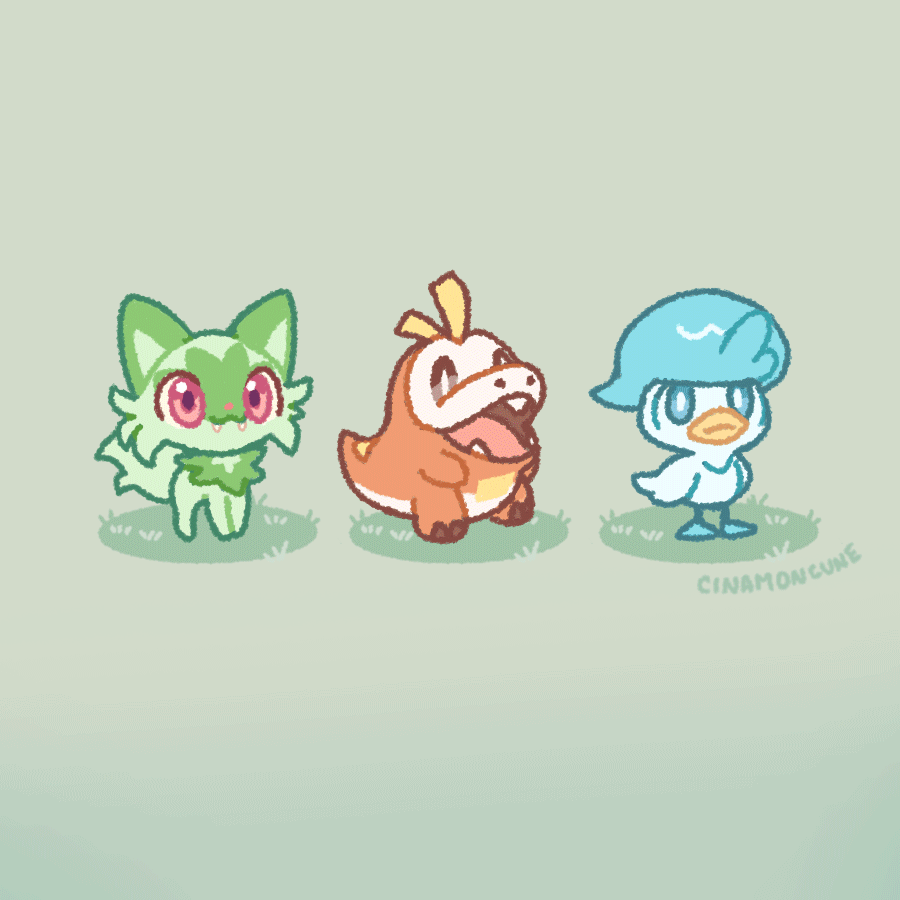

Regions
This page will showcase each Pokémon region, where in the world it's based on, and what starters are for each generation.

Generation 1: Kanto
Kanto is from the games Pokémon Red, Pokémon Blue, Pokémon Green, Pokémon Yellow, Pokémon FireRed, Pokémon LeafGreen, Pokémon Let's Go Pikachu, and Pokémon Let's Go Eevee. Kanto is based on the east-central part of Honshu in Japan. The starters for this generation are: Charmander, a Fire type. Squirtle, a Water type. Bulbasaur, a Grass/Poison type.
Generation 2: Johto
Johto is from the games Pokémon Gold, Pokémon Silver, Pokémon Crystal, Pokémon HeartGold, and Pokémon SoulSilver. Johto is based on the layouts from Kansai, Chūbu, and Shikoku areas in Japan. In all of the Johto games, once the Johto region is beaten, there is a post game available that takes you back to Kanto to play through the Kanto region. The starters for this generation are: Cyndaquil, the Fire type. Totodile, the Water type. Chikorita, the Grass type.

Generation 3: Hoenn
Hoenn is from the games Pokémon Ruby, Pokémon Sapphire, Pokémon Emerald, Pokémon Omega Ruby, and Pokémon Alpha Sapphire. Hoenn is based on the island of Kyūshū in Japan. Hoenn is rather infamous for having extended water sections in the layout. The starters for this generation are: Torchic, the Fire type. Mudkip, the Water type. Treecko, the Grass type.

Generation 4: Sinnoh
Sinnoh is from the games Pokémon Diamond, Pokémon Pearl, Pokémon Platinum, Pokémon Brilliant Diamond, Pokémon Shining Pearl, and Pokémon Legends: Arceus. Sinnoh is based on Hokkaido in Japan. The starters for this generation are: Chimchar, the Fire type. Piplup, the Water type. Turtwig, the Grass type.

Generation 5: Unova
Unova is from the games Pokémon Black, Pokémon White, Pokémon Black 2, and Pokémon White 2. Unova is based on New York City in the US. It is the first generation based on a location outside of Japan. The starters for this generation are: Tepig, the Fire type. Oshawott, the Water type. Snivy, the Grass type.

Generation 6: Kalos
Kalos is from the games Pokémon X, Pokémon Y, and Pokémon Legends: Z-A. Kalos is based on Paris in France. Kalos was the first region to make a transition from 2-D graphics into 3-D, and also featured a brand new Pokémon typing, the Fairy type. The starters of this generation are: Fennekin, the Fire type. Froakie, the Water type. Chespin, the Grass type.

Generation 7: Alola
Alola is from the games Pokémon Sun, Pokémon Moon, Pokémon Ultra Sun, and Pokémon Ultra Moon. Alola is based on the islands of Hawaii. Alola is the first region to do away with the typical format of 8 gym badges in favor of more story-heavy "Island Trials". The starters in this generation are: Litten, the Fire type. Popplio, the Water type. Rowlet, the Grass type.

Generation 8: Galar
Galar is from the games Pokémon Sword and Pokémon Shield. Galar is based on Scotland, England, and Wales in the UK. The starters for this generation are: Scorbunny, the Fire type. Sobble, the Water type. Grookey, the Grass type.

Generation 9: Paldea
Paldea is from the games Pokémon Scarlet and Pokémon Violet. Paldea is based on Spain and Portugal. The starters for this generation are: Fuecoco, the Fire type. Quaxly, the Water type. Sprigatito, the Grass type.
Have a different opinion? Let me know!